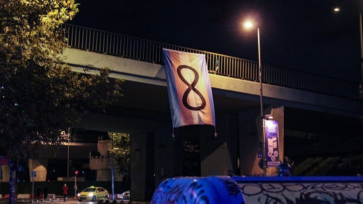

2023-11-20 03:20:00
20 Kasım Nefret Suçu Mağduru Transları Anma Günü için Söğütlüçeşme’den bayrağımızı sallandırdık 🏳️⚧️
Katledilen translar isyanımızdır!
Hesap sormaya devam edeceğiz!
#20kasımnefretsuçumağdurutranslarıanmagünü
#transcinayetleripolitiktir
